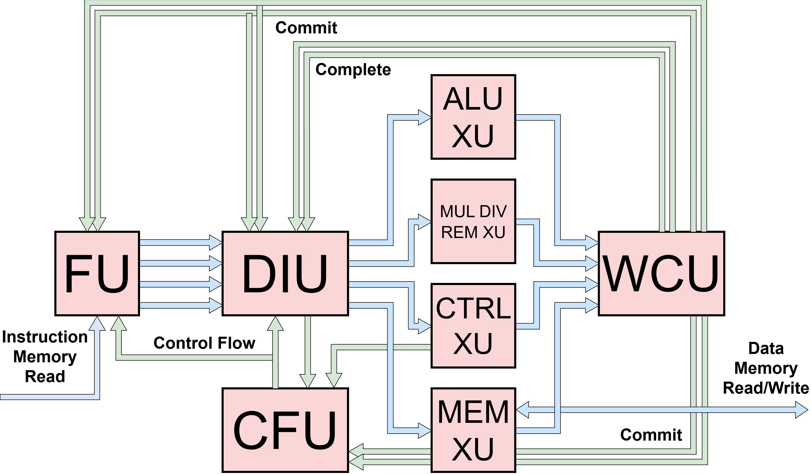

Processor Overview
Zeppelin is implemented as a single top-level processor module
(hw/top/Zeppelin.v) parameterized to cover the full range of
configurations from a minimal single-issue core to a multi-lane superscalar
core with branch prediction and out-of-order issue queues.
{kind=link}

Pipeline Composition
The Zeppelin toplevel instantiates the following units:
A single Fetch Unit (FU) driving
p_num_fe_lanesparallelF__DIntfinterfaces toward the DIUA single Decode-Issue Unit (DIU) that receives
p_num_fe_lanesinstructions per cycle and drivesp_num_pipesparallelD__XIntfinterfaces toward the execute unitsp_num_alusparallel ALU execute unitsp_num_mulsparallel multiply/divide/remainder execute units, whose internal implementation (fully iterative, hybrid, or fully single-cycle) is selected by thep_muldivrem_selparameterOne Load-Store Unit (LSU) execute unit
One Control-Flow Execute Unit for conditional branches
A single Writeback-Commit Unit (WCU) that arbitrates the
p_num_pipescompleting pipes down top_num_be_lanesbackend commit lanesA single Control-Flow Unit (CFU) that arbitrates between control-flow redirect notifications from the DIU and the control-flow execute unit and broadcasts the winning redirect to the fetch unit and back to the DIU
The number of pipes p_num_pipes is derived as
p_num_alus + p_num_muls + 2 (the + 2 for the LSU and control-flow
execute units).
Toplevel Parameters
The full list of toplevel parameters and their defaults lives in
hw/top/Zeppelin_defaults.vh and defs/UArch.v. The most important
configuration knobs are summarized below.
Parameter |
Purpose |
|---|---|
|
Width of the frontend fetch block; number of instructions decoded and renamed per cycle |
|
Number of commit lanes out of the WCU per cycle; must be \(\leq 2^{p\_seq\_num\_bits}\) |
|
Number of replicated ALU and MUL/DIV/REM execute units |
|
Width of the sequence-number space (also the ROB depth) |
|
Size of the physical register file |
|
Depth of each per-pipe issue queue |
|
|
|
Force every issue queue to use the in-order variant regardless of pipe type |
|
|
|
Enable the optional branch-target buffer in the fetch unit |
|
Set-associative BTB size and associativity |
|
Maximum in-flight instruction-memory requests |
|
Per-interface FIFO depths between major stages and at each execute unit input |
Configurations Used in Evaluation
While the same RTL covers the full range of designs, the BRG MEng evaluation focused on the following representative points:
Single-issue (1FE, 1BE).
p_num_fe_lanes = 1,p_num_be_lanes = 1,p_num_alus = 1,p_num_muls = 1. Roughly matches Blimp in area and performance; used as the modular-processor baseline.Two-issue (2FE, 2BE).
p_num_fe_lanes = 2,p_num_be_lanes = 2,p_num_alus = 2,p_num_muls = 2. The pareto-optimal balance of area, energy, and performance; the recommended default.Two-issue with out-of-order issue queues. Same as 2FE/2BE, with
p_all_iq_in_order = 0and issue-queue depth\geq 2so that the out-of-orderIssueQueueOOOis instantiated on ALU and MUL pipes.Wider configurations (3FE/3BE, 4FE/4BE). Achievable by setting the lane counts higher, with diminishing performance returns. See the design sweeps and pareto frontiers in the project report for the tradeoff details.
The control-flow execute pipe is always in bypass mode (its issue queue is
forced to p_bypass = 1) so that branches resolve in a single cycle, and
the memory pipe is always forced to use the in-order issue-queue variant
because the load-store unit does not contain a load-store queue.